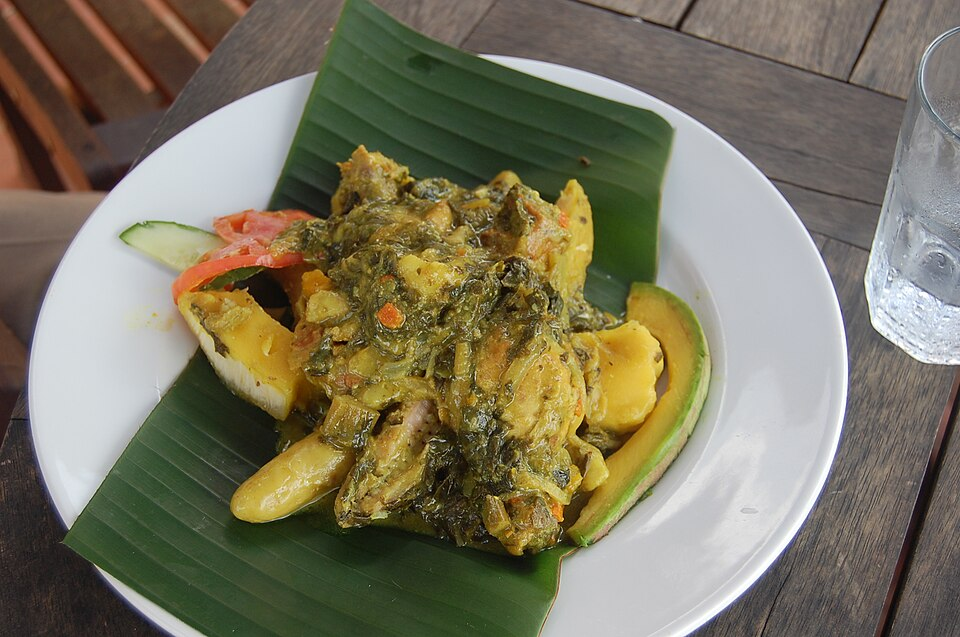
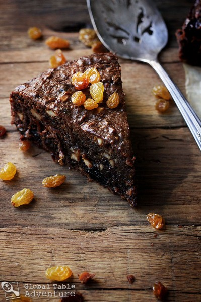
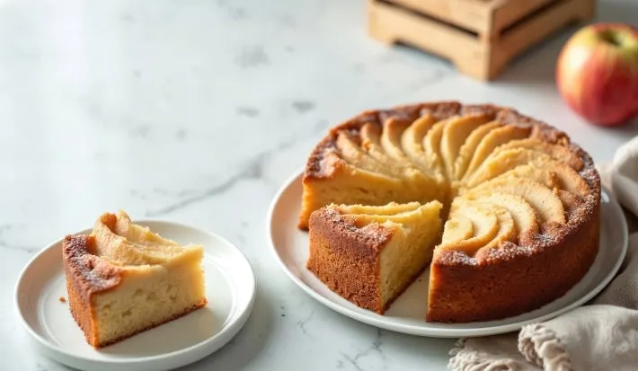

Granada
A Ilha das Especiarias

A Ilha das Especiarias
O Oil Down é o prato nacional de Granada. Trata-se de um ensopado feito com fruta-pão, carnes, legumes, bolinhos e callaloo, cozidos em leite de coco com ervas e especiarias. O nome vem do modo de preparo: o leite de coco é cozido até secar, deixando apenas o óleo, que é absorvido pelos ingredientes ou fica no fundo da panela. Diferente de outros ensopados, os ingredientes são colocados em camadas e não são misturados durante o cozimento. A receita pode variar conforme a tradição de cada família.
Base: Fruta-pão Leite de coco
Carnes: Carne salgada (geralmente bovina ou suína) Frango
Vegetais e folhas: Callaloo Cenoura Abóbora Quiabo Batata ou outros legumes
Outros: Bolinhos (dumplings de farinha) Temperos: Alho Cebola Pimenta Tomilho Ervas e especiarias diversas

O Black Cake é um dos doces mais tradicionais de Granada e de outras ilhas do Caribe. Ele é especialmente preparado em ocasiões importantes, como o Natal, casamentos e celebrações familiares. Esse bolo se destaca por sua cor escura, textura úmida e sabor intenso. Sua principal característica é o uso de frutas secas — como uvas-passas e ameixas — que são deixadas de molho em rum (ou outro licor) por um longo período, podendo durar semanas ou até meses. Esse processo dá ao bolo um gosto marcante e aroma forte. Além das frutas, o Black Cake leva especiarias, açúcar caramelizado e outros ingredientes que reforçam seu sabor profundo. Diferente de bolos comuns, ele é mais denso e rico, sendo considerado uma sobremesa sofisticada dentro da cultura caribenha. Mais do que um alimento, o Black Cake tem valor cultural, pois está ligado a tradições familiares e celebrações importantes, sendo muitas vezes preparado com receitas passadas de geração em geração.
Base: Farinha de trigo Manteiga Ovos Açúcar
Frutas (parte mais importante): Uva-passa Ameixa seca Cereja (opcional) Frutas cristalizadas
Líquidos: Rum (ou outro licor) Vinho (às vezes usado junto com o rum)
Outros: Açúcar caramelizado (para dar cor escura) Essência de baunilha Temperos: Canela Noz-moscada Cravo

Um bolo de noz-moscada clássico, inspirado nos sabores intensos das ilhas caribenhas como Granada, é um bolo amanteigado, aromático e denso, frequentemente servido com uma calda doce. A noz-moscada ralada na hora é o ingrediente principal para garantir um sabor autêntico e perfumado, resultando em uma sobremesa rica e aconchegante. Ingredientes (Bolo): 4 ovos 1/2 xícara de manteiga derretida (ou em temperatura ambiente) 2 xícaras de açúcar cristal 1 copo de leite 2 ½ xícaras de farinha de trigo peneirada 1/2 noz-moscada ralada na hora (ajuste a gosto) 1 ½ colher de sopa de fermento em pó 1 colher de chá de extrato de baunilha (opcional) Ingredientes (Calda Simples): 1 xícara de água 1 xícara rasa de açúcar 1/4 de noz-moscada ralada Modo de Preparo: Preparo: Pré-aqueça o forno a 180°C e unte uma forma com manteiga e farinha. Massa: Bata os ovos, a manteiga, o açúcar, o leite e a noz-moscada no liquidificador ou batedeira até obter um creme homogêneo. Mistura: Transfira para uma tigela e adicione a farinha de trigo peneirada aos poucos, misturando delicadamente. Por último, incorpore o fermento. Assar: Despeje a massa na forma e leve ao forno por cerca de 30-40 minutos, ou até que um palito saia seco. Calda: Enquanto o bolo assa, ferva a água, o açúcar e a noz-moscada até formar uma calda leve. Finalização: Com o bolo ainda morno, faça furos com um garfo e despeje a calda por cima para umedecer.
